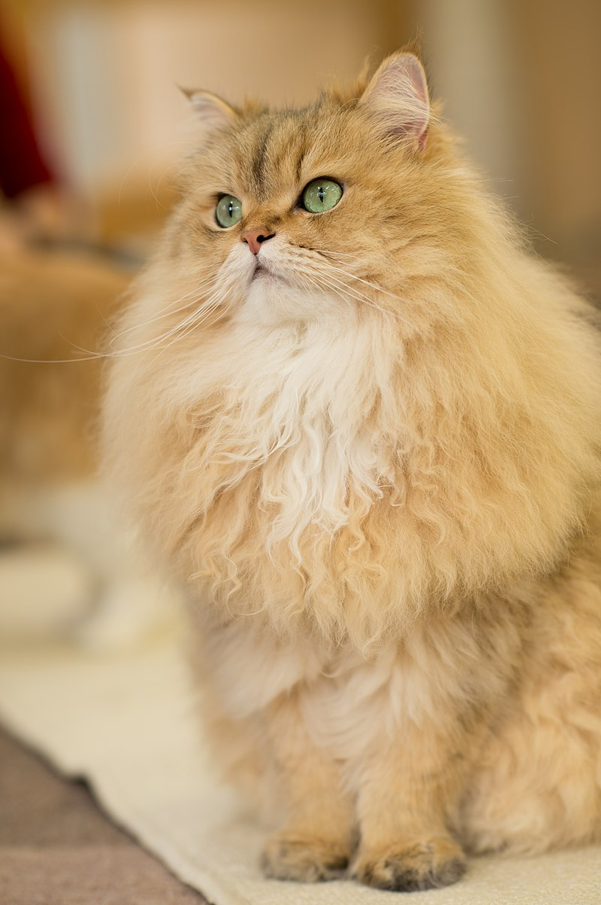

GATO PERSA

Se caracteriza por ser de un tamaño mediano a grande. Tiene la cabeza
redonda, maciza y el cráneo ancho. El frente es redondeado y los pómulos son fuertes y
prominentes. Tiene el hocico corto y el mentón fuerte y lleno. Los ojos son grandes, redondos,
bien abiertos y entre más separados mejor, de un color muy intenso y brillante.
La posición de la nariz debe estar asimétrica pero muy importante que se encuentre a la
altura de los ojos y profundidad "nariz (chata)" para un gato de exposición. Las orejas
del gato persa son pequeñas y redondeadas, estas deben estar en posición "V" asimétricas
en la cabeza. En las puntas cubiertas de pelo que nace de dentro hacia afuera y así pasan
desapercibidas y muy estéticas, confundidas con el pelo largo del lomo, patas y la cabeza.7?